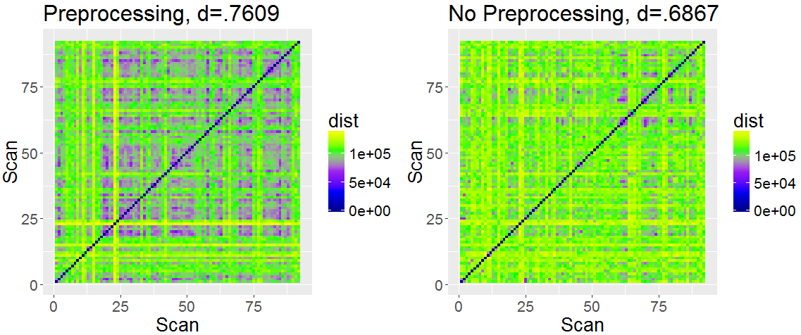
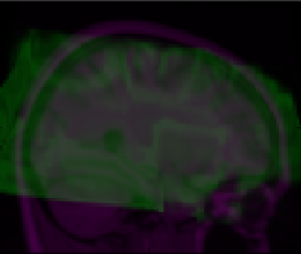
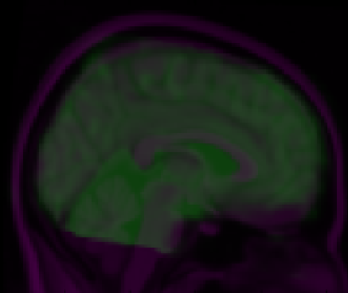
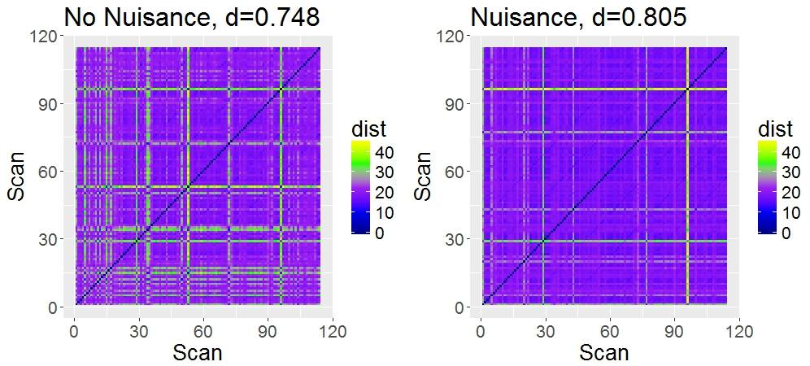
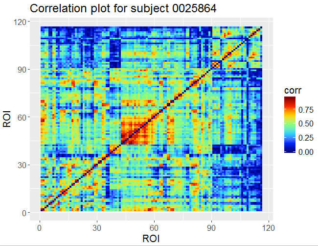
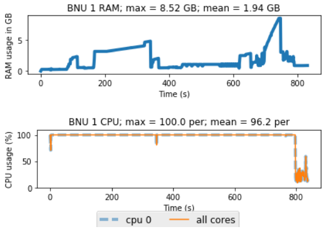
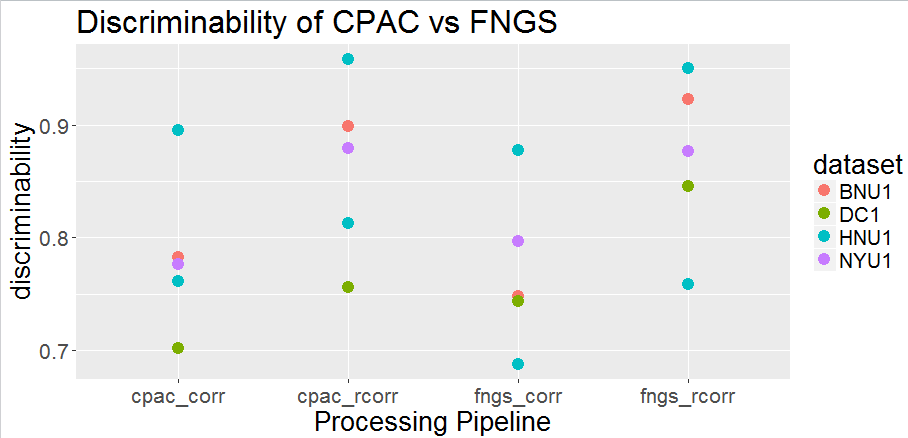
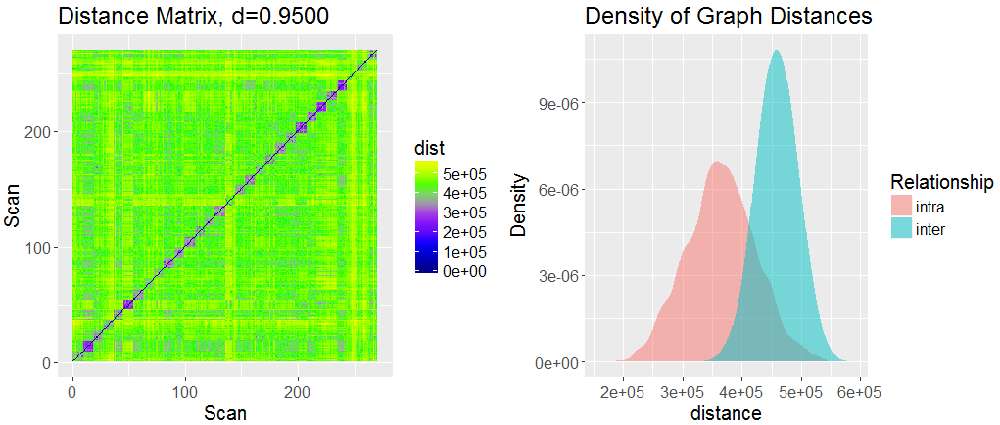
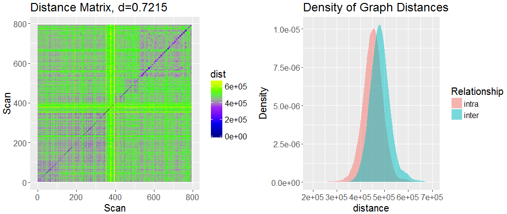
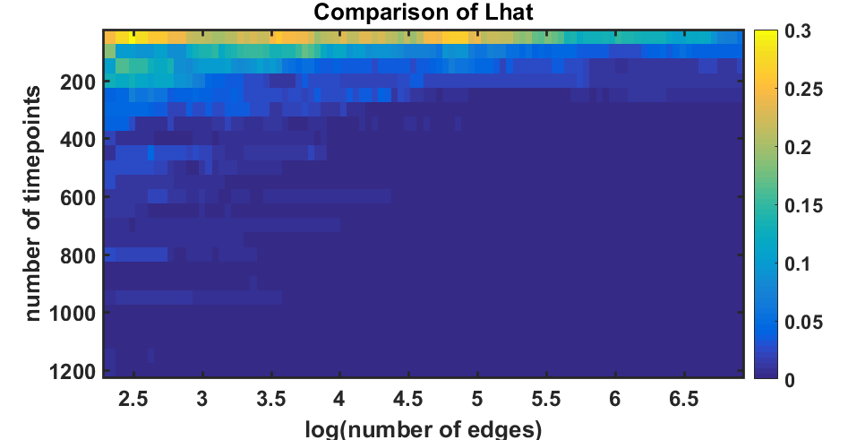

FNGS
A One-Click Pipeline for the Automated Acquisition of Functional MRI Connectomes
Created by Eric Bridgeford, Tanay Agarwal, Eric Walker / Contact: @ebridge2
Q: What is functional Neuroimaging?
BOLD Signal
- Blood-Oxygen Level Dependent imaging
- When brain region becomes more active, body sends more oxygenated blood
Hemodynamic Response
- Deoxy-hemo has different MR signature than oxy-hemo
- End up with this differential contrast when a brain region becomes active
- Blood response pattern called Hemodynamic Response Function (HRF)
4D Imaging
- Image the BOLD value in each volume-pixel (voxel)
- $2\times 2\times 2\; mm^3$ squares we measure the BOLD contrast in
- Take a 3D volume of a brain per timepoint
- $4D$ image: $3$ spatial $+$ $1$ temporal (time)
Anatomical Imaging
- high resolution, 3D anatomical image taken with each subject
- Same true brain shape, different resolution
- Allows a look at anatomical features themselves
Q: How do we Choose a "Good" Pipeline?
Desiderata
- If I scan everybody in a room twice and acquire functional connectomes, will I be able to identify the pairs of connectomes?
- Identify = Will everybody's closest connectome (as defined by frobenius norm) be their alternate connectome?
Discriminability
- Discriminability quantifies this
- Low Discriminability: all connectomes look the same
- High Discirminability: repeated connectomes of same subject look most similar
- brute-force search over many popular pipeline options (64 total) to help us understand pipeline performance
FNGS Pipeline

Preprocessing


Preprocessing Improves Discriminability
- p-value of difference: $p = .01$
Registration

Stepwise-Alignment offers fail-safe registration
 - If a brain fails on an aggressive strategy like FNIRT, fall back on a gentle strategy like FLIRT
Nuisance Correction

Nuisance Correction Improves task-Block Correlation Discriminability
Connectome Estimation

Timeseries

Correlation Matrix/Connectome
Advantages of FNGS
FNGS has low memory and CPU requirements
- Single threaded: easy to parallelize
FNGS is more user-friendly than comparable pipelines
- Compared to a Nipype Pipeline, FNGS is:
- Easy to Use: no config files
- Intuitive: No convoluted output structure
- Robust: no chance of picking a bad pipeline
- Scalable on Cloud: Nipype pipelines must be individually tuned to a specific cluster software
FNGS performs comparably to reference pipelines
Q: How do we make deployment easy?
FNGS Pipeline
Docker Containers simplify dependency constraints
- software container with all dependencies associated with our pipeline
- user does not have to install anything locally (except for the docker controller)
- All drivers and controllers, for cloud or local usage, can be called from here with one click
FNGS Offers multiple options for deployment
Real Data Experiments
Single Dataset Analysis shows high discriminability
- 270 scans
- Analyze in parallel: approximately $\$15$, about $2.5$ hours
- Compute Discriminability between subjects using Discriminability package
- Goal: Are the connectomes differentiable between subjects?
Average Connectome, $n=108$
Single Dataset Analysis shows high discriminability
Harmonized Analysis reveals quantitative variations in timeseries
- $n=794$ scans collected at $6$ different sites
- Similar scanners and parameter selection
- Analyze in parallel: approximately $\$50$, and about $7$ hours
- Goal: Are the connectomes differentiable between Scan Site?
Harmonized Analysis reveals quantitative variations in timeseries
- Theoretical random discriminability score: $0.248$
- p-value of difference: $p = 0.001$
- Scanning site plays a heavy role in quantitative properties
Signal Subgraphing to assess task fMRI
- Statistical Question: Can we identify the sub-network, or sub-graph, that variest between experimental conditions?
- Related Question: How many timepoints, and how many observations, do we need to get a good prediction?
- Constraints: Graphs are binarized
- Classification: Bayes Plugin Classifier trained on the estimated subgraph
- Quantification: $\hat{L}$, the misclassification rate
Simulation Setting
- Given: 2 Classes of Covariance Matrices and Mean Vectors
- Identify 100 most variant edges, and define these edges as subgraph
- Sample $t$ timepoints and form correlation matrix per observation
- Binarize collection of Correlation matrices
- Run Signal Subgraphing, and identify the ranges of "good-performing $t, n$
- $\hat{L} = \textrm{min}_{t, n} {L}(C_{t, n} | S(C_{t, n}))$
Signal Subgraphing finds a good approximation of the actual subgraph
Future Goals
- Improve Nuisance Correction Further
- Quantify "Bad Nuisance Correction"
- Implement LDDMM (Large Deformation Diffeomorphic Metric Mapping) for Registration
- Explore Multigraphs
Acknowledgements
- Team: Eric Bridgeford, Tanay Agarwal, Eric Walker
- Dr. Josh Vogelstein: PI
- Greg Kiar: PhD student at McGill University
- Neurodata
Important Links
- Live Webservice: FNGS homepage
- Docker Cloud: FNGS pipeline
- Docker Web Service: FNGS web service
- Weekly Updates: FNGS repo
- Code: NDMG pipeline (contains FNGS pipeline)
Questions?
- TODO: Demo running in cloud
Created by Eric Bridgeford, Tanay Agarwal, Eric Walker / Contact: @ebridge2